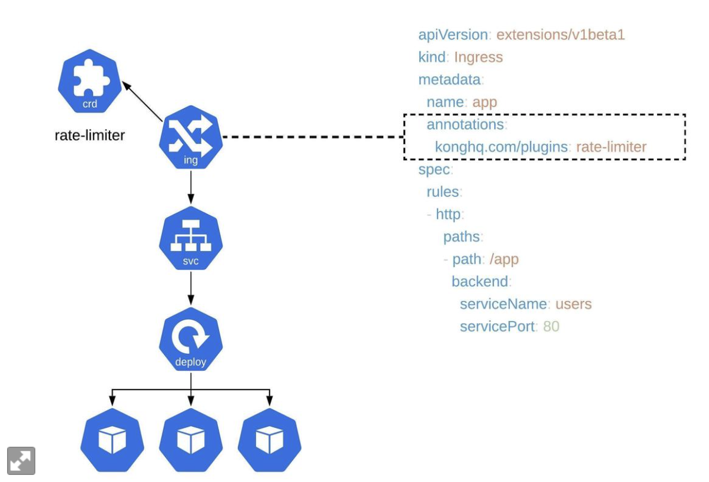

容器和k8s发展史
“编排” 是容器云项目的灵魂
Docker 提供了一种非常方便的打包机制，直接打包了应用运行所需要的操作系统（只打包文件系统，不包括操作系统内核），保证了本地和云端的一致
Docker 通过容器镜像，解决了应用打包这个根本难题
容器本身没有价值，有价值的是容器编排
容器的隔离和限制技术
容器是一种沙盒技术，因此应用之间有了边界而不相互干扰，而这些应用也容易进行搬运
进程：
程序的执行：从磁盘的二进制文件 转换为 计算机内存中的数据（从磁盘读数据到内存），寄存器的值，堆栈的指令，被打开的文件，以及设备状态信息的集合
程序运行起来后计算机执行环境的总和，就是进程
容器的核心功能：通过约束和修改进程的动态表现，来创造一个边界
Cgroup 制造约束
Namespace用来修改进程视图
docker run命令：
1 | docker run -it busybox /bin/sh |
-it 表示 通过tty和容器内部进行交互
/bin/sh 表示需要运行的应用
docker 并没有一个真的容器运行在宿主机，docker 帮助用户启动一个应用进程，并且加上了各种各样的Namespace参数，这样就会对文件，网络等形成隔离。
疑问：在一个容器内启动一个java进程，但可以在容器内执行多个命令，这是为什么？
命令是在运行过程中运行的，但不受docker的控制，就像野孩子
单进程的含义不是只能运行一个进程，而是只有一个进程是可控的（相当于docker容器是一个进程组，但只有一个进程是可控的）
对隔离环境负责的是宿主环境本身
docker和其他应用应该是同级别，用户在容器中运行的进程，和其他进程一样，都由宿主机进行管理，只不过这些隔离的进程有额外的namespace参数。而进程使用能使用的资源量，受到Cgroups的限制
限制
Linux Control Group，限制一个进程组使用资源的上限，包括CPU，内存，磁盘，网络带宽
linux系统下 /proc显示的是CPU相关状态信息
总结：
Docker的核心原理：
创建一个用户进程，并且启动Namespace配置，设置指定的Cgroup参数，切换进程的根目录
镜像
挂载在容器根目录，为容器进程提供隔离后环境的文件系统，即为容器镜像；也叫rootfs
ingress
包含两个组件：ingress和ingress-controller
https://cloud.tencent.com/developer/article/1167282
service的入口，定义了规则，通过它定义好的域名的请求转发到集群中的service
每添加一个新服务，只要写一个新的ingress的yaml即可
相当于将nginx的配置抽象为ingress对象
ingress controller
把新加入的ingress转化为nginx的配置并生效

相关命令
运行参数
1 | -server -jar /app/eval-0.0.1-SNAPSHOT.jar --spring.config.additional-location=config.yml -Duser.timezone=GMT+8 &>/app/log/$(date +%Y-%m-%d_%H-%M-%S.log) & |
获得所有namespace下的pod
1 | kubectl get pods --all-namespaces |
进入pod
1 | kubectl exec -it -n [namespace] [podName] bash |
获得某个namespace下的pod信息
kubectl get pods -n [namespace]
详细信息：
kubectl get pods -n [namespace] -o wide
查看ingress-controller位置
kubectl get po -o wide -n ingress-nginx
从pod导出文件到服务器
kubectl cp -n seec environment-21-67-6559c6bf8f-gdq49:dev.sql /home/dev.sql
查看ingress的配置
1 | kubectl get ingress -n [namespace] [ingress name] -o yaml |
查看nginx-ingress
kubectl get pod -n ingress-nginx
获得nginx-ingress配置
kubectl get configmap -n ingress-nginx
kubectl edit configmap -n
创建secret
1 | kubectl create secret tls seecoder-paas --cert=./certificate/6044117__seec.seecoder.cn.pem --key=./certificate/6044117__seec.seecoder.cn.key --namespace seec |
修改ingress配置
1 | kubectl edit ingress [ingress name] -n seec |
太棒的文档：
https://feisky.gitbooks.io/kubernetes/content/concepts/ingress.html
修改ingress-controller启动命令行配置（暂未确定是否在这里改）
1 | kubectl get pod -n ingress-nginx |
tls配置
1 | tls: |